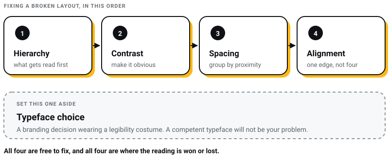
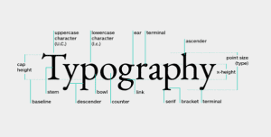
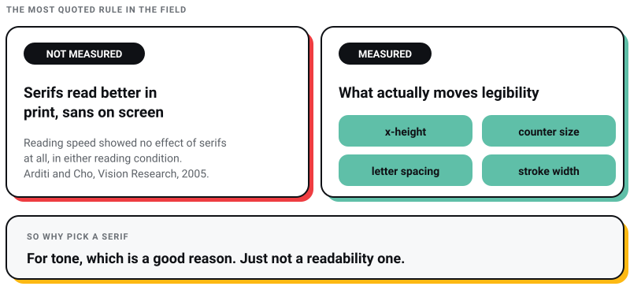
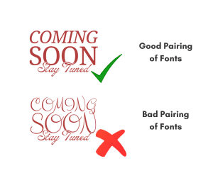
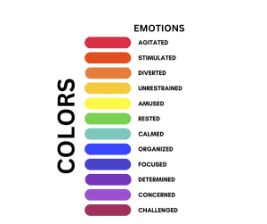

Branding
Branding
13 Top Must-Read Books for Web and Graphic Designers
From small-time gigs to booming creative industries, web and graphic designers have taken centre stage. Whether you’re a rookie or a design virtuoso…

Typography writing likes to open with a statistic: over 1,400 creative visuals are made every minute, so yours will get lost unless you master type. I went looking for whoever counted them. There is no study, no publisher and no method behind that figure anywhere I can find it, which is why you will not read it here as though it were a fact.
That is the recurring problem with typography advice. A lot of it is folklore that survived because it sounds like it ought to be true. I run Pixel Street, a design and branding studio in Salt Lake, Kolkata, and we set type for brands including Coca-Cola, ITC and Marico. So I have a working interest in knowing which of these rules are load-bearing and which are just repeated.
My short answer: hierarchy, contrast, spacing and alignment decide whether a layout works, and you can fix most bad typography by attacking those four in that order. Typeface choice matters far less than designers like to believe. And the single most quoted rule in the field, that serifs read better in print and sans-serifs read better on screen, has no research behind it. I explain why below.
Everything that follows is either something we use on client work or something with a named source attached to it.

Typography is the art and technique of arranging type so that written language is legible, readable and worth looking at. Legible means a reader can tell the letters apart. Readable means they can get through a paragraph without effort. Those are two different problems, and most briefs I receive conflate them.
It is also the cheapest lever on the page. Changing a typeface costs nothing. Changing line length, line spacing and hierarchy costs nothing. Either will do more for a layout than another round of colour exploration.

Four elements do most of the work, and they are the vocabulary the rest of this post assumes.
Typefaces and fonts are often used interchangeably, but they refer to different aspects of text styling.
Typefaces fall into three main categories:
Serif typefaces feature decorative lines or “serifs” at the ends of each character stroke. They read as traditional and formal, and they dominate printed books.
Examples: Times New Roman, Garamond, Baskerville, Georgia.
Sans-serif typefaces do not have the decorative lines found in serif fonts, giving them a cleaner and more modern appearance. They dominate screens — though not for the reason everyone gives, which I will come to.
Examples: Arial, Roboto, Verdana.
Script typefaces mimic cursive handwriting or calligraphy. They are typically used for decorative purposes and are less readable than serif or sans-serif fonts, making them suitable for headings, logos, or invitations.
Examples: Lobster, Pacifico, Handlee.
Every typography guide I have read says serifs are more readable in print and sans-serifs more readable on screen. This rule is repeated everywhere and I can find no study behind it.
Aries Arditi and Jianna Cho tested the question directly in Vision Research in 2005, using a purpose-built typeface whose only variable was serif size. Reading speed showed no effect of serifs at all, either in rapid serial presentation or in continuous reading. They did measure a very small legibility gain on text that was tiny or far away, and they were careful to attribute it to the extra letter spacing serifs impose rather than to the serifs. Their stated conclusion was no difference in legibility between typefaces differing only in the presence or absence of serifs. Alex Poole reached the same place after reviewing more than fifty empirical studies for his master's research, published in 2008. Serifs may well do something, he concluded, but they sit so far from the mechanics of reading that the effect is not worth measuring.
What does move legibility, per that same body of work, is x-height, counter size, letter spacing and stroke width. Those are the four things to compare when you are deciding between two faces. Serifs are an aesthetic and tonal choice, which is a perfectly good reason to make one. It is just not a readability reason, and you should stop selling it to clients as though it were.

So how I actually choose:
Kerning refers to the adjustment of space between two individual characters in a word. It ensures that the spacing between characters is visually balanced.
Tracking is similar to kerning but applies to the spacing between all characters in a word or block of text.
Leading (pronounced “ledding”) is the vertical space between lines of text, also known as line spacing.
Ten principles, in the order I would attack a broken layout.
Hierarchy in typography is about arranging text elements so that the most important information stands out. This guides the reader’s eye through the content in a logical order.
How to Apply:
Contrast in typography refers to using differences in fonts, sizes, weights, and colors to make your text stand out.
How to Apply:
Consistency in typography means using the same fonts, sizes, and styles throughout your design to create a cohesive and professional look.
How to Apply:
Alignment keeps your text neat and organized, ensuring that your design is visually appealing and easy to follow.
How to Apply:
Readability and legibility are crucial for ensuring that your text is easy to read and understand.
How to Apply:
The famous alternative, 45 to 75 characters with 66 as the ideal, is not a research finding. It comes from Robert Bringhurst's The Elements of Typographic Style, and it is one very good typographer's judgement rather than a measured result. The measured results are less tidy. Dyson and Haselgrove, in the International Journal of Human-Computer Studies in 2001, found that a medium measure of about 55 characters supported the most effective on-screen reading, while readers actually got through long lines faster and lost some comprehension doing it. Speed and comprehension pull in opposite directions, and no single number settles it.
Kerning and leading are defined above. What matters here is that spacing is the lever most designers reach for last and should reach for first, because it is the one that costs nothing and shows immediately.
How to Apply:
Scale in typography refers to the size relationship between different elements in your design, which helps create hierarchy and guide the reader through the content.
How to Apply:
Fonts and typefaces are fundamental elements of typography that set the tone for your design.
How to Apply:
The reliable move is a serif for headings against a sans-serif for body text, or the reverse. It works because the two faces are obviously different rather than nearly the same, and near-the-same is what makes a pairing look like an accident.
Two typefaces is a design. Three is usually a compromise nobody wanted to argue about. Beyond that you are not pairing, you are collecting.
Examples of Good and Bad Pairings


Color in typography adds emotion and emphasis to your design and can greatly influence readability.
How to Apply:
A grid is the structure everything else aligns to. It is what stops a layout from being a set of individually reasonable decisions that do not add up.
How to Apply:
These overlap deliberately with the principles above. They are the working shorthand, the version I would say out loud over someone's shoulder rather than explain.
Align text to the left rather than centring or justifying it. Every line then starts at the same edge, and you avoid the rivers of white space that full justification opens up in narrow columns. This is the rare rule of thumb a standards body has actually written down: WCAG 2.2 asks that text is not justified.
Stick to a single font for your designs. Mixing fonts can be tricky unless you’re sure they complement each other well. Master one font before experimenting with others.
When changing font weights, make noticeable jumps (like from light to bold). Small changes can be hard to spot, so go for more contrast to make important elements stand out.
When changing point sizes, double or halve the size for different text elements. For instance, use 15 pt. for body text if your headline is 30 pt. This creates a clear hierarchy.
Keep your type aligned to a single grid line or axis, whether it’s vertical or horizontal. This consistency helps maintain a clean and organized layout.
Given the research above, the honest version of this tip is that a competently drawn typeface will not be your problem. Helvetica, Garamond and Futura have each survived decades of professional use. Pick one and spend the saved hours on hierarchy and spacing, which is where the damage actually happens.
Use lines or shapes to group related information. This helps make the design look more organized and coherent.
Don’t place elements right at the edges or corners unless it’s intentional. Allow for negative space to keep your design breathing and uncluttered.
Spacing is key. Avoid forced justification and pay attention to gaps, widows (single words on a line), and orphans (lines or words separated from their paragraph). Consistent spacing makes for cleaner text.
Use bold or italic styles to emphasize text rather than relying on regular weights. This adds variety and emphasis where needed.
These rules will help you create clean, effective typography in your designs.
Adobe Fonts offers a vast library of high-quality typefaces that are fully integrated with Adobe Creative Cloud. It’s perfect for designers looking for a variety of fonts for print and digital projects.
USP: Extensive Library & Seamless Integration
Google Fonts provides a large collection of open-source fonts licensed for commercial use, which is why a large share of the web is set in them. Two web-specific notes, because this is where studios lose hours.
First, loading. Google's own web.dev guidance is that font-display: optional is the most performant option, holding the text render for no more than 100ms, and that swap is the choice if the web font matters more — with the caveat web.dev attaches to it, that you then have to deliver the file early enough not to cause a layout shift. Second, variable fonts. The popular claim is that one variable file always beats two static ones. Web.dev says the opposite by default: a variable font carries many styles, so it typically has a larger file size than an individual static font, and it only pays off if you are genuinely using several weights or widths. If your site uses regular and bold, ship two static files.
USP: Free & Web-Optimized
Font Squirrel curates a selection of free, high-quality fonts that are legally licensed for commercial use. It’s a go-to resource for designers needing premium fonts without the cost.
USP: High-Quality Free Fonts
WhatFont, the browser extension by Chengyin Liu, names what a page is set in with one click and shows the styles applied to that text, without anyone having to open dev tools. Watch for imitators with near-identical names in the extension stores. I use it more for auditing our own live sites than for admiring anyone else's.
USP: Easy Font Identification
Typekit Practice still shows up on lists of typography resources. Typekit stopped existing as a brand on 15 October 2018, when Adobe renamed it Adobe Fonts, and the Practice site is now frozen: navigation that says "Use Typekit" and articles that stop years ago. A resource list that still sends you there has not been reread in a long time.
Practical Typography by Matthew Butterick is what I send junior designers instead. It is free to read, now in its second edition, reader-supported and ad-free since 2013, and it makes decisions rather than listing options, which is exactly what someone learning type needs.
USP: Free, opinionated and actually maintained
If you take one thing from this, take this: stop optimising the typeface and start optimising the arrangement. Hierarchy, measure, line spacing and alignment are where the reading experience is won, and all four are free to fix. Typeface choice is a branding decision wearing a legibility costume.
The second thing is a habit rather than a rule. Be suspicious of any typography advice that arrives without a name attached to it. The serif-versus-sans readability rule is the biggest one in circulation, but it is not the only one, and the test is always the same: ask who measured it, and go and read them.
If you are applying this to a brand rather than a page, typography is most of what a wordmark is, so read it next to our step-by-step logo design process and the wider branding process. For the layout side, the companion piece on white space in web design covers the spacing decisions this post only touches. And if the WCAG criteria above are what brought you here, they sit inside a much larger set of obligations we cover in our guide to website accessibility compliance.
At Pixel Street we design and build for brands including Coca-Cola, ITC and Marico, from a studio in Kolkata. If your type is doing less work than it should be, that is a fixable problem, and usually a cheap one.
13 min read 15 cited sources Branding
Author
Khurshid Alam is the founder of Pixel Street, an AI-native design & development studio. Design thinking on weekdays and spreadsheets on weekends.
He writes about growth, design, and AI, mostly because someone has to say the quiet parts out loud.
Branding
From small-time gigs to booming creative industries, web and graphic designers have taken centre stage. Whether you’re a rookie or a design virtuoso…
 Branding
Branding
Hey there! Have you ever watched a commercial that made you smile, feel inspired, or even brought you to tears?
 Branding
Branding
Hey there! Have you ever wondered how some ads just make you want to buy something right away? Or how a website convinces you to click a button and…
 Branding
Branding
Photoshop is a powerhouse for graphic designers, photographers, and digital artists. Yet, with the right plugins, you can improve your work by a great…